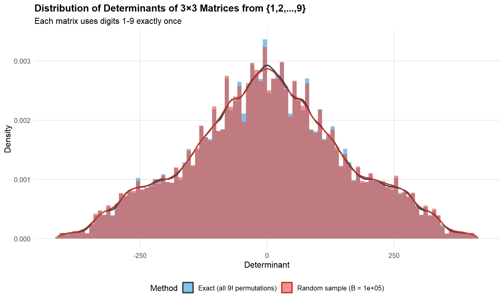

Code
library(ggplot2)
library(dplyr)
library(arrangements)
library(moments)From the time, long ago, I first studied linear algebra, I’ve always had a fascination with the idea of the determinant of a square matrix, \(\text{det}(\mathbf{A}) \equiv | \mathbf{A} |\). You just take your matrix \(\mathbf{A}\), which could be \((2 \times 2)\), or \((10 \times 10)\), or \((100 \times 100)\), … and \(| \mathbf{A} |\) turns that into a single number, that expresses many of its properties—algebraic, geometric and statistical.
In short, the determinant \(| \mathbf{A} |\) is a measure of the “size” of \(\mathbf{A}\). So, when we’re talking about the covariance matrix \(\mathbf{S}\) of data variables, \(| \mathbf{S} |\) is a measure of total variance, taking correlations into account.
The concept has a surprisingly long history. Traces appear in ancient Chinese mathematics — the Nine Chapters on the Mathematical Art (~200 BC) solved systems of equations using what amounts to determinant-like elimination — and independent discoveries by Seki Takakazu in Japan (1683) and Leibniz (1693) formalized the idea in the West. The word “determinant” itself came from Cauchy in 1812, who also standardized much of the modern notation; Cayley’s 1858 paper on matrix algebra finally set it in the broader context of linear transformations. For a full account, the MacTutor history is the place to start.
This post explores an interesting combinatorial and statistical problem:
What is the distribution of determinants of all 3×3 matrices that can be formed from the numbers 1 through 9, each used exactly once?
It arose from a simpler question Math StackExchange: What is the total number 3x3 matrices using only digits 1 to 9?
We answer this question in two ways:
library(ggplot2)
library(dplyr)
library(arrangements)
library(moments)\(9! = 362,880\) is a large number, but not so large to preclude an elegant two-line computational solution, even if it takes time and storage space.
arrangements::permutations() to generate all of theseapply() to calculate their determinants, with a helper function det_from_vec()Computing exact distribution using all 362,880 permutations of the digits 1-9.
det_from_vec <- function(v) {
M <- matrix(v, nrow = 3, ncol = 3, byrow = TRUE)
det(M)
}
all_perms <- arrangements::permutations(1:9, k = 9)
determinants_exact <- apply(all_perms, 1, det_from_vec)Generating a Monte Carlo approximation with a large random sample of permutations. Here, replicate() is used to repeatedly apply the function det_from_vec() on a random permutation.
As you can see, they are very nearly identical.
B <- 100000
set.seed(42)
determinants_random <- replicate(B, {
v <- sample(1:9, 9, replace = FALSE)
det_from_vec(v)
})How do the exact and simulated distributions compare?
det_summary <- function(x) {
data.frame(
N = length(x),
Min = min(x),
Max = max(x),
Mean = round(mean(x), 2),
Median = median(x),
SD = round(sd(x), 2),
Unique = length(unique(x)),
`Zero %` = round(100 * mean(x == 0), 2),
check.names = FALSE
)
}
rbind(
cbind(Method = "Exact (9! permutations)", det_summary(determinants_exact)),
cbind(Method = paste0("Random sample (B = ", format(B, big.mark=","), ")"), det_summary(determinants_random))
) Method N Min Max Mean Median SD Unique Zero %
1 Exact (9! permutations) 362880 -412 412 0.00 0 154.85 3891 0.41
2 Random sample (B = 1e+05) 100000 -412 412 0.05 0 155.43 3451 0.40We can compare the distributions by overlaying them in a single plot, showing the exact and permutation distributions as both histograms and density curves.
df_combined <- rbind(
data.frame(determinant = determinants_exact,
method = "Exact (all 9! permutations)"),
data.frame(determinant = determinants_random,
method = paste0("Random sample (B = ", format(B, big.mark = ","), ")"))
)
ggplot(df_combined, aes(x = determinant, fill = method)) +
geom_histogram(aes(y = after_stat(density)),
bins = 100, alpha = 0.6, position = "identity") +
geom_density(aes(color = method), linewidth = 1, fill = NA) +
scale_fill_manual(values = c("#3498db", "#e74c3c")) +
scale_color_manual(values = c("#2c3e50", "#c0392b")) +
labs(
title = "Distribution of Determinants of 3×3 Matrices from {1,2,...,9}",
subtitle = "Each matrix uses digits 1-9 exactly once",
x = "Determinant", y = "Density", fill = "Method", color = "Method"
) +
theme_minimal(base_size = 12) +
theme(legend.position = "bottom",
plot.title = element_text(face = "bold", size = 14),
panel.grid.minor = element_blank())
The exact distribution has an interesting shape. It is symmetric around 0; the density plot shows a bunch of small “shoulders”, and there are lots of spikes and troughs.
ggplot(data.frame(determinant = determinants_exact), aes(x = determinant)) +
geom_histogram(aes(y = after_stat(density)),
bins = 120, fill = "#3498db", alpha = 0.7) +
geom_density(color = "#2c3e50", linewidth = 1.2) +
labs(
title = "Exact Distribution: All 362,880 Permutations",
subtitle = "Determinants of 3×3 matrices using digits 1-9 once each",
x = "Determinant", y = "Density"
) +
theme_minimal(base_size = 12) +
theme(plot.title = element_text(face = "bold", size = 14),
panel.grid.minor = element_blank())
quantile(determinants_exact, probs = c(0, 0.25, 0.5, 0.75, 1)) 0% 25% 50% 75% 100%
-412 -101 0 101 412 sort(table(determinants_exact), decreasing = TRUE) |> head(10)determinants_exact
-45 45 -27 27 -55 55 -65 -11 11 65
1704 1704 1611 1611 1503 1503 1500 1500 1500 1500 Each large positive value is exactly matched in frequency with its negative counterpart.
skewness(determinants_exact)[1] 1.174732e-20The two most striking features of the distribution — perfect symmetry around zero and the tent-like (near-triangular) shape — both have mathematical explanations rooted in the structure of the determinant.
For any filling of the 3×3 matrix with a permutation of \(\{1, \ldots, 9\}\) that yields \(\det(\mathbf{A}) = d\), swapping any two rows produces another valid filling (still a permutation of \(\{1, \ldots, 9\}\)) with \(\det = -d\). This gives an exact bijection between fillings with determinant \(d\) and fillings with determinant \(-d\), so the distribution is perfectly symmetric around zero — not approximately, but exactly.
The Leibniz formula expands the 3×3 determinant into exactly six signed products, three positive and three negative:
\[ \det(\mathbf{A}) = \underbrace{(a_{11}a_{22}a_{33} + a_{12}a_{23}a_{31} + a_{13}a_{21}a_{32})}_{P} - \underbrace{(a_{13}a_{22}a_{31} + a_{11}a_{23}a_{32} + a_{12}a_{21}a_{33})}_{N} \]
Each of \(P\) and \(N\) is a sum of three products, one from each row and each column — a “Latin square transversal” of the matrix. By the same even/odd permutation symmetry, \(P\) and \(N\) have identical marginal distributions, so \(\det = P - N\) is symmetric.
The shape of \(P - N\) depends on how close to uniform the marginal distribution of \(P\) (or \(N\)) is. If \(P\) were exactly uniform on some interval \([a, b]\), the difference of two independent copies would be exactly triangular (the Irwin–Hall \(n=2\) case). \(P\) and \(N\) aren’t independent — they share the same nine entries — but their marginal distributions are bounded, roughly unimodal, and symmetric enough that the difference is close to triangular rather than Gaussian.
The distribution never approaches Gaussian here because:
The exact distribution computed above is a discrete distribution on integer values. But is there a closed-form expression for it — a formula that gives, for each integer \(d\), exactly how many of the 9! permutations produce \(\text{det}(\mathbf{A}) = d\)?
The short answer is: if there is, not a simple one. The problem is equivalent to counting integer solutions to the determinant expansion
\[a_{11}(a_{22}a_{33} - a_{23}a_{32}) - a_{12}(a_{21}a_{33} - a_{23}a_{31}) + a_{13}(a_{21}a_{32} - a_{22}a_{31}) = d\]
subject to the constraint that \((a_{11}, \ldots, a_{33})\) is a permutation of \(\{1, \ldots, 9\}\). This is a system of Diophantine equations with a permutation constraint, and no general closed form is known. The brute-force enumeration we performed is, in a sense, the answer — the distribution is the count table. One could express it via a generating function or characteristic function, but these don’t simplify to anything more illuminating than the enumeration itself. The problem is harder than it looks.
This analysis reveals the distribution of determinants when all possible 3×3 matrices are formed from the digits 1-9, each used exactly once. The Monte Carlo approximation with random permutations closely matches the exact distribution, validating the sampling approach for similar problems where exact enumeration might be computationally prohibitive.